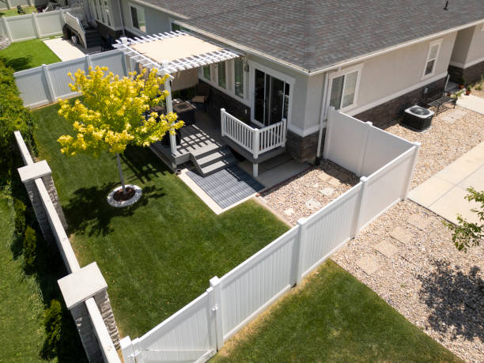

Village Of The Branch New York
info@superiorfenceandrail.pro
Village Of The Branch New York
info@superiorfenceandrail.pro

Secure your home or business in Village Of The Branch New York with top-quality fencing. We specialize in wood, vinyl, chain-link, and more. Trust our experienced team for reliable, long-lasting fence installations.
Click Here To Call Us (877) 848-1711When it comes to reliable and high-quality fencing services in Village Of The Branch New York our company stands out as the trusted choice for residential and commercial properties. Whether you need a sturdy privacy fence, a secure chain-link fence, or an elegant ornamental design, we specialize in installing and repairing fences to enhance the safety, privacy, and aesthetics of your property.
Our team of experienced professionals uses only top-grade materials and cutting-edge techniques to deliver fences that are built to last. We offer a wide range of fencing options, including wood, vinyl, aluminum, and steel, tailored to meet your specific needs and style preferences. Each project begins with a detailed consultation to ensure your vision becomes a reality, no matter the size or complexity.
Choosing us means you’re selecting a company dedicated to excellence, timely service, and customer satisfaction. We understand that fences play a critical role in protecting your property and boosting its curb appeal. That’s why we prioritize durability, precision, and a flawless finish.
If you’re searching for expert fence installation or repair services in Village Of The Branch New York look no further. Contact us today for a free quote and discover why we’re the go-to fencing company in Village Of The Branch New York . Let us help you secure and beautify your property with a fence you can depend on.
Residential & commercial Fences
Quality services at affordable prices
Immediate 24/ 7 emergency services


Looking for top-quality fence installation services in Village Of The Branch New York ? Our expert team is here to help you transform your property with durable, stylish, and secure fencing solutions. Whether you need a wooden privacy fence, a sleek vinyl option, or a sturdy chain-link barrier, we specialize in installing fences that meet your specific needs and enhance the beauty of your property.
With years of experience, we pride ourselves on delivering professional and reliable services. We use premium materials that ensure long-lasting durability and withstand harsh weather conditions. From residential fencing to commercial and industrial installations, our skilled professionals provide customized designs and precise craftsmanship to fit your requirements.
Why choose us for your fence installation in Village Of The Branch New York ? We offer competitive pricing, timely project completion, and exceptional customer service. Our experts guide you through every step, from selecting the right fence style to final installation, ensuring a hassle-free experience.
A professionally installed fence not only improves your property's aesthetics but also adds privacy, security, and value. Whether you want to keep pets safe, protect your family, or enhance your business premises, our fences are built to perform.
Contact us today for the best fence installation services in Village Of The Branch New York . Let us bring your fencing vision to life!
Residential & commercial Fences
Quality services at affordable prices
Immediate 24/ 7 emergency services
For a high level of security that is both effective and flexible, electric fencing is an excellent option. Our electric fencing installation services provide a solution that deters intruders while being easy to manage. Whether for residential use, commercial properties, or farmland, electric fencing can be customized to fit your needs. Our team is knowledgeable about local regulations and safety measures, ensuring that your system is compliant and effective. Choose us for our commitment to superior technology and quality service that enhances your property’s security.

Bamboo fencing is an eco-friendly and visually appealing option that resonates well with nature lovers . Known for its strength and durability, bamboo provides a natural look while offering privacy and security. Our bamboo fence installation services deliver customized solutions that meet your aesthetic preferences and functional needs. We guide you through the selection process and ensure professional installation, enhancing your garden, patio, or residential space with a beautiful, sustainable product. Choose us for an expertise that blends functionality with eco-friendly aesthetics.

Wrought iron fencing adds a touch of elegance to any property, but it requires proper care and maintenance to stand the test of time. Our wrought iron fence restoration and installation services specialize in both repairing existing fences and installing new ones. Our team understands the intricacies involved in wrought iron work, ensuring your fence not only looks beautiful but also functions perfectly. We focus on quality craftsmanship and customer satisfaction, making us the best choice for all your wrought iron fencing needs.

Every property has unique needs, and a one-size-fits-all approach to fencing simply won’t do. At Fences, we specialize in custom fence design and build services that cater to your specific requirements and aesthetic preferences.
Our design team will work closely with you to understand your vision, offering professional insights and expert recommendations on materials and styles that fit your needs. Whether you desire modern fencing, traditional looks, or an eco-friendly option, we will create a solution tailored just for you.
Our skilled builders employ quality craftsmanship and meticulous attention to detail during the installation process, ensuring your custom fence not only looks amazing but functions perfectly for years to come.
Trust Fences for your custom fence projects . Join our portfolio of satisfied clients who have brought their unique fencing visions to life. Your dream fence is just a consultation away.

Keeping horses and livestock secure is crucial for their safety and your peace of mind. Our horse and livestock fencing services in Village Of The Branch New York offer solutions tailored to rural properties that prioritize both security and aesthetic appeal. With materials ranging from wood to high-tensile wire, we create fencing designed to contain livestock effectively without compromising their welfare. Our experienced team understands the nuances of livestock behavior and will ensure fencing meets your specific needs. Choose us for expert advice and high-quality installation, ensuring your animals remain safe and secure.
Enhance the beauty of your garden and landscape with our expertly designed garden fencing solutions at Fences. Our fencing not only defines your outdoor spaces but also adds a decorative element that complements the natural surroundings. Whether you’re looking to create a quaint backyard oasis or a lush garden retreat, we have the perfect fencing options for you.
From decorative picket fences to rustic split rail designs, our team can create boundaries that enhance the ambiance of your space while keeping out unwanted visitors. Our skilled installation process ensures that your garden fence is not only beautiful but also structurally sound and durable against the elements. Choose Fences for garden and landscape fencing and transform your outdoor areas into stunning visual displays.

In our busy world, finding peace and quiet in your home or business might seem impossible. Noise reduction fencing provides an effective solution to block unwanted sounds and create a more serene environment. At Fences, we specialize in noise reduction fencing installation offering tailored solutions designed to enhance your comfort and tranquility.
Our noise reduction fences are constructed using specially designed materials designed to absorb and deflect sound waves, effectively minimizing external noise. This type of fencing is ideal for homes located near busy roads, commercial properties, or any other noisy environments.
We understand that soundproofing requires careful planning and installation to be effective, and our experienced team is adept at assessing your specific needs. We collaborate with you to design a fencing solution that fits your environment and provides optimal sound reduction.
What distinguishes Fences in Village Of The Branch New York is our expertise in noise reduction techniques and commitment to customer satisfaction. We believe in delivering solutions that truly enhance your quality of life, ensuring your investment provides the intended peace and quiet.
Invest in your comfort with professional noise reduction fencing from Fences. Let us help you create a tranquil outdoor space where you can relax and enjoy your surroundings undisturbed.

Combining elegance with strength, ornamental steel fencing is an ideal choice for homeowners looking to enhance their property’s security while maintaining aesthetic appeal. At Fences, we specialize in ornamental steel fence installation that adds value and beautifies your landscape. This type of fencing provides a robust perimeter while boosting curb appeal.
Our ornamental steel fences are available in a variety of styles and finishes, ensuring a perfect match for your home’s architecture. The durability and low maintenance of steel make it a wise investment for long-term security and beauty. Our expert team manages the entire installation process, ensuring that the fence not only meets your expectations but exceeds them. Choose Fences for ornamental steel fencing and enjoy the perfect blend of security and elegance.

For those seeking a strong and enduring barrier, stone and concrete fencing offers unrivaled durability and aesthetic appeal. At Fences, we specialize in the design and installation of stone and concrete fences that not only secure your property but also enhance its overall appearance. These materials provide an exceptional option for homeowners and businesses looking for long-lasting solutions.
Our skilled team will work with you to create a custom design that reflects your style and addresses your property’s unique layout. We tailor the materials, colors, and textures to ensure that your stone or concrete fence complements the landscape beautifully. Choose Fences for stone and concrete fencing needs and invest in a lasting solution that combines security with beauty.
Years Experience
Expert Technicians
Satisfied Clients
Compleate Projects
At Superior Fence, we pride ourselves on being the premier fencing provider across all cities in Village Of The Branch New York . Whether you’re looking for residential, commercial, or custom fencing solutions, our team is committed to delivering top-quality results, exceptional customer service, and unmatched craftsmanship.
Our expert fence installers are experienced in working with a variety of materials, including wood, vinyl, chain-link, and wrought iron, ensuring that your fence is built to last while complementing the aesthetics of your property. We understand that every project is unique, which is why we offer personalized solutions tailored to your specific needs and budget.
What sets us apart from other fencing companies is our dedication to customer satisfaction. From the initial consultation to project completion, we prioritize clear communication, transparency, and reliability. Our team works efficiently to minimize disruption to your daily life while ensuring that your new fence is installed to the highest industry standards.
Superior Fence also stands behind our work with a strong warranty on both materials and labor, providing you with peace of mind for years to come. As a locally trusted company in Village Of The Branch New York we have built a solid reputation for being the go-to choice for all fencing projects.
Choose Superior Fence for your next fencing project in Village Of The Branch New York and experience the difference of working with a company that truly cares about quality and customer satisfaction.
In today's world, ensuring your personal space is free from the prying eyes of neighbors and passersby is essential. A privacy fence installation is more than just a boundary; it's an investment in your peace of mind. At Fences, we specialize in designing and installing high-quality privacy fences that perfectly suit your property and lifestyle. Our team understands that privacy is paramount, and we work diligently to create secure, enclosed outdoor spaces where you can relax, entertain, and enjoy your surroundings.
We offer a variety of materials for your privacy fence, including wood, vinyl, and composite options, each with unique benefits. Our experts will help you choose the right style that complements your home while ensuring maximum privacy. We also focus on durable construction, using only the best materials that withstand the test of time, weather, and wear.
What sets us apart from other fencing companies in Village Of The Branch New York is our commitment to customer satisfaction. We take the time to understand your needs, collaborate on a design that works for you, and provide professional installation that adheres to local regulations. Our skilled team ensures that every fence we install not only looks great but stands strong against the elements.
Choosing us means choosing quality. We pride ourselves on our attention to detail and the beauty of our craftsmanship. Our fences not only enhance your property's aesthetic appeal but also add value to your home. With years of experience in privacy fence installation we have built a reputation for reliability, efficiency, and excellence.
Whether you're looking to block noise from a busy street or simply want to create a secluded outdoor retreat, our privacy fences are an ideal solution. Let's transform your outdoor space with a stunning privacy fence that offers protection, beauty, and peace of mind. Trust Fences for all your privacy fence installation needs—because your privacy matters.
Wooden fences have an exquisite charm that can enhance the curb appeal of any residential or commercial property. However, like any outdoor structure, wooden fences can succumb to the elements, leading to deterioration over time. At Fences, we provide expert wooden fence repair and installation services tailored to meet the diverse needs of our Village Of The Branch New York clientele.
Our team of seasoned professionals understands the nuances of wooden fence installation. We work efficiently to ensure your new fence not only looks stunning but also stands the test of time. We offer a wide variety of styles and finishes, allowing you to customize your fence to fit your specific tastes and surrounding landscape.
In the event of damage, our wooden fence repair services will restore your fence's integrity and beauty. Whether it’s fixing damaged boards, replacing posts, or addressing rot and insect infestations, we apply effective techniques to bring your fence back to life. We use high-quality materials and provide solutions that not only resolve immediate issues but also prevent future problems.
Why choose Fences for your wooden fence needs Our commitment to excellence and customer satisfaction is unmatched. We recognize that each project is unique, and we approach every job with personalized attention. Our transparent pricing model ensures no hidden fees, giving you peace of mind.
Don't let a damaged fence detract from your property. Our dedicated team will help you choose the right wood type and design that aligns with your budget and vision. With our experience and dedication to quality workmanship, we guarantee that your wooden fence will be a stunning addition to your property. Choose us for professional, reliable wooden fence repair and installation services —your satisfaction is our priority.
Vinyl fencing is becoming increasingly popular in Village Of The Branch New York due to its durability, low maintenance, and aesthetic flexibility. At Fences, we offer a comprehensive range of vinyl fencing services, from installation to repair and maintenance. Our vinyl fences provide a sleek and modern look that complements any property style, making them an ideal choice for homeowners who prioritize both beauty and practicality.
One of the significant advantages of vinyl fencing is its resistance to weathering and pests. Unlike wood, vinyl will not rot, warp, or splinter, giving you peace of mind for years to come. Our experienced team is committed to delivering flawless installation that ensures a secure and sturdy structure. We also provide ongoing maintenance services to keep your vinyl fence looking as good as new. With our extensive knowledge of vinyl fencing options, we help you choose colors and styles that will match your home perfectly. Trust Fences for your vinyl fencing solutions in Village Of The Branch New York and discover why we are the go-to experts in the area.
Chain-link fencing offers a practical and economical solution for those looking to secure their property while maintaining visibility. At Fences, we specialize in reliable chain-link fence installation that meets your needs without sacrificing quality or aesthetics.
A chain-link fence is perfect for residential and commercial properties, providing robust security and perimeter control without blocking sight lines. Our team is experienced in customizing chain-link fences with various heights, colors, and coating options to better blend with your property's landscape.
Choosing us means opting for a professional installation that adheres to the highest standards. We understand the specific requirements of chain-link fencing and will work with you to ensure your fence is installed quickly and efficiently. Furthermore, our commitment to ongoing maintenance and repair services means you can rely on us to keep your fencing in top condition.
Join the growing number of satisfied customers who have chosen our chain-link fencing solutions for their security and durability needs. At Fences, we ensure that your property receives the protection it needs without sacrificing style.
Aluminum fencing combines beauty and strength, making it an excellent choice for homeowners and businesses looking to enhance their property's aesthetics while ensuring security. At Fences, we offer decorative aluminum fencing services tailored to meet your unique needs with.
Our decorative aluminum fences are available in a variety of styles and finishes, allowing you to create a stunning visual impact that complements the design of your property. Lightweight yet exceptionally durable, aluminum fences are resistant to rust and corrosion, making them ideal for various climates. This means less maintenance for you and a longer life for your investment.
We understand that the fence you choose is not just about security; it’s also about enhancing your property’s value and beauty. Our skilled team will work closely with you to design and install a decorative aluminum fence that meets your specifications while providing all the necessary security features. From pool enclosures to garden borders, aluminum fencing can be adapted to suit numerous applications.
Why should you choose Fences for your decorative aluminum fencing project? Our commitment to customer satisfaction, quality materials, and expert craftsmanship sets us apart from the competition. We prioritize your needs and will guide you through the entire process, ensuring a hassle-free experience from start to finish.
Our professional installation team adheres to best practices and industry standards, guaranteeing that your aluminum fence is expertly installed for optimum performance. With years of experience working in Village Of The Branch New York we have the knowledge and skills to handle any challenges that arise during installation and to ensure that your fence looks stunning and functions perfectly.
If you’re looking for an elegant, long-lasting fencing solution to enhance your property, look no further than decorative aluminum fencing by Fences. We are dedicated to delivering results that exceed your expectations and enhance the beauty and security of your home or business.
The classic picket fence is a timeless symbol of Americana, and at Fences, we believe it’s a perfect choice for homeowners wanting to add charm and character to their properties. Our picket fence installation services transform ordinary yards into picturesque landscapes.
Our picket fences are customizable, offered in a variety of materials and styles, from traditional wood to low-maintenance vinyl. Whether you want to create a safe space for your children and pets or simply enhance your property’s appearance, we have the perfect solution for everyone.
With years of experience, our team delivers expert craftsmanship, ensuring every fence we install is sturdy and aesthetically appealing. We prioritize using quality materials while also providing you with a broad range of options that suit your budget and design preferences.
When you choose Fences, you’re choosing dedicated professionals committed to delivering exceptional results. Join our satisfied customers by selecting us for your picket fence installation needs; let’s create a warm and inviting outdoor space together.
Split rail fencing offers a rustic, charming solution for homeowners who desire an open, airy feel around their properties. Ideal for defining boundaries without creating a solid barrier, our split rail fence installations are perfect for farms, gardens, and large yards. They are particularly functional in rural settings and can be complemented with other fencing types for enhanced privacy and security. We carefully select high-quality materials to ensure longevity and resilience against outdoor elements. Our exceptional service and commitment to excellence set us apart as the preferred choice for split rail fencing .
Protecting your fence against the elements is crucial for maintaining its beauty and functionality over time. At Fences, we offer professional fence staining and maintenance services designed to extend the life of your fencing investment.
Our expert team understands the importance of proper maintenance and can recommend the best products suitable for your specific fence type. Regular staining not only enhances the fence’s appearance but also helps to protect it from damage caused by UV rays, moisture, and pests.
We pride ourselves on our attention to detail and quality service. Our maintenance plans are customizable to fit your needs, ensuring that your fence remains in pristine condition year-round. Choosing us means you’ll receive reliable support and expert advice to keep your fences looking their best.
Join our customers who trust Fences for all their fence maintenance needs. We ensure your property’s boundaries remain attractive and functional, providing you peace of mind and a welcoming environment.
When it comes to protecting your loved ones, especially children, a pool safety fence is essential. At Fences, we specialize in pool safety fence installation services designed to enhance the safety of your swimming pool area, allowing you to enjoy your pool without worry.
Our pool fences are built to meet the highest safety standards, providing a secure barrier that prevents unauthorized access to your pool. We offer a range of materials and styles, from aluminum to mesh, ensuring you can find the perfect fit for your landscape and aesthetic.
Our installation process is quick and efficient, allowing you to enjoy your pool safely in no time. Our team understands local regulations and safety requirements, ensuring compliance with all laws while maximizing safety and ease of use.
Choose Fences for your pool safety fencing needs and let us help you create a secure oasis for your family . Our commitment to quality and safety guarantees your peace of mind while enjoying the summer days by the pool.
Keeping your pets safe and secure is a top priority for any responsible pet owner. At Fences, we provide professional pet containment fencing solutions that ensure your furry friends can play freely without the worry of wandering off or becoming exposed to external dangers.
Our pet containment systems include a variety of fence types suitable for different pet sizes and behaviors, from traditional wooden and vinyl fences to specialized invisible fencing systems. We work closely with you to design a containment solution that fits your yard and meets your pets' specific needs.
Choosing our services means ensuring the safety of your pets while maintaining the aesthetics of your property. Our expert installation and ongoing support ensure your pet containment fence is functional and reliable.
Join countless satisfied customers who have trusted Fences to create a safe environment for their beloved animals. Our dedication to quality, design, and customer care makes us the go-to choice for pet containment solutions.
In today’s world, ensuring the safety of your commercial property is more important than ever. At Fences, we specialize in security fencing solutions designed to safeguard your business assets while projecting a professional image to clients and visitors alike.
Our security fences come in various materials and styles, from robust chain-link to decorative iron fencing, allowing you to prioritize both security and aesthetic appeal. We understand that every business is unique, so we offer customized fencing solutions tailored to your specific security needs.
Our installation process is designed to be efficient, minimizing disruption to your operations while ensuring a solid and effective barrier is built quickly. We utilize the latest fencing technologies and developments to give your security fence added strength and resilience.
Choose Fences for your business security fence needs . Join other satisfied businesses who have taken a proactive approach to their security and trust us to provide top-notch fencing solutions that keep your property safe.
Industrial facilities require robust and effective fencing solutions to secure their premises and assets. Industrial chain-link fencing is an exceptional choice, providing unparalleled security without obstructing views or airflow. At Fences, we specialize in industrial chain-link fence installation delivering customized fencing solutions that cater specifically to the industrial sector.
Chain-link fencing is a versatile and cost-effective option, providing long-lasting durability and security. Our industrial chain-link fences are available in various heights, gauges, and coatings, ensuring your facility is protected while conforming to industry standards. Whether you need a simple barrier or a more complex enclosure with added security features, we have the expertise to meet your needs.
Our installation process is efficient and compliant with all local regulations, ensuring that your industrial chain-link fence is installed correctly and securely. Our skilled team of professionals has extensive experience working in various industrial environments, allowing us to anticipate and address any unique challenges that may arise during the installation process.
What distinguishes Fences from competitors is our unwavering commitment to quality and customer service. We focus on delivering superior craftsmanship and timely service, ensuring that your industrial fencing project is completed on schedule without compromising on quality.
Our transparent pricing model ensures you know what to expect, with no surprises along the way. We also provide ongoing support and maintenance services to ensure your industrial chain-link fence remains in excellent condition for years to come.
Protect your industrial facility with a robust chain-link fence designed specifically for your needs. Trust Fences for top-tier industrial chain-link fence installation services and experience the difference in quality and reliability.
Keeping construction sites secure and safe is essential for both workers and the public. Our temporary fencing services in Village Of The Branch New York offer effective and easily deployable solutions designed for construction and event management. Our fences are sturdy yet lightweight, making them easy to install and remove as needed. They provide clear boundaries, deter unauthorized access, and enhance safety on-site. With customizable options, we can cater to different project scales and durations, ensuring you get the perfect fit for your needs. Trust our team for efficient service and quality materials that ensure your construction site is well-protected.
For businesses looking to balance aesthetic appeal with effective security, aluminum fencing is an excellent choice. At Fences, we provide commercial aluminum fencing solutions that offer durability, low maintenance, and an elegant appearance.
There are numerous advantages to selecting aluminum fencing for your commercial property, such as resistance to rust and corrosion, which means it will look great for years to come without intensive upkeep. Our aluminum fences come in various designs tailored to fit your branding and needs, providing an attractive perimeter that meets security demands.
Our team is committed to delivering high-quality fencing installation, using only the finest materials and methods to ensure your fence stands the test of time. We work collaboratively with you to understand your property requirements, ensuring optimal functionality and safety.
Choosing Fences means trusting a partner dedicated to quality service and customer satisfaction. With many successful projects completed we have earned a reputation as the go-to provider for commercial aluminum fencing solutions.
Securing your property is more than just erecting barriers; it’s about controlling who enters. Our access control and gate systems are designed to meet a variety of security needs, incorporating advanced technology such as keypads, remote controls, and biometric scans. We provide comprehensive installation services that ensure seamless integration with your existing fencing. Our solutions enhance your security while allowing you to maintain easy access for authorized personnel. Trust our experienced team to design and install a system that fits your security needs and budget, making us the go-to choice for access control solutions .
For properties requiring a higher level of security, barbed wire fencing is an optimal choice. At Fences, we specialize in the installation of durable and effective barbed wire fencing designed to deter intruders and safeguard your assets.
Our barbed wire fences are suitable for industrial properties, farms, and other high-security locations. They act as a deterrent while being aesthetically unobtrusive. We use robust materials and professional installations to ensure your fence withstands harsh weather conditions and remains effective over time.
Safety is a primary concern during installation, and our experienced team adheres to all local guidelines while maintaining the highest safety standards. We believe in providing our clients with unparalleled service combined with quality workmanship and materials.
Choose Fences for your barbed wire fencing solutions . Join others who have trusted us to bolster their perimeter security with our expert services. Keep your property safe and secure with a barbed wire fence installation that fits your needs.
In a bustling commercial environment, privacy is often a priority. At Fences, we specialize in commercial privacy fencing that securely delineates your business space while providing the discretion you need. Our privacy fences are tailored for business environments, allowing for effective separation from surrounding properties.
We use high-quality materials such as vinyl, wood, or composite to create durable structures that withstand wear and tear from everyday use. Our team works closely with you to ensure the fence meets your specific requirements, both functionally and aesthetically. For commercial privacy fencing in Village Of The Branch New York trust Fences to deliver exceptional results and unparalleled service you can rely on.
Security is a significant concern for both residential and commercial properties, and an anti-climb fence is an effective solution for safeguarding your premises. At Fences, we specialize in anti-climb fence installation that acts as a robust security barrier while offering peace of mind.
Our anti-climb fences are designed with specific features that prevent unauthorized access, including pointed tops and closely spaced pickets. We assess your security needs carefully and provide a tailored approach that fits with your landscape and architectural style. With our professional installation team, you can trust that your anti-climb fence will not only deter intruders but also enhance the overall look of your property. Choose Fences for anti-climb fencing in Village Of The Branch New York and protect what matters most to you.
Protecting your industrial facility requires a reliable perimeter fencing solution tailored to your unique needs. At Fences, we specialize in perimeter fencing designed specifically for industrial applications, combining security and accessibility.
Our perimeter fences are made from high-grade materials built to withstand the stresses of industrial environments. We provide customized solutions tailored to your facility’s layout, security needs, and regulatory compliance requirements.
Installation is performed by our expert team, ensuring that your fencing is secure while allowing easy access for authorized personnel. We understand the importance of efficiency in industrial settings, which is why we strive to complete installations promptly without sacrificing quality.
Trust Fences to provide the best perimeter fencing for your industrial facility . Join our roster of satisfied clients who have secured their operations with our expert-designed solutions. We take pride in providing high-quality, reliable, and effective fencing systems that protect your assets.
Secure fencing is critical for warehouses and storage units to prevent theft and unauthorized access to your property. Our fencing services for warehouses are tailored to provide robust security while allowing for efficient operations. We offer customizable solutions that include chain-link and solid options, fitting the unique requirements of your facility. Our experienced team collaborates with you to design and implement fencing solutions that enhance the safety and security of your assets. Choose us for reliable service and expertise in warehouse fencing that meets your expectations.
As environmental awareness grows, the demand for eco-friendly fencing solutions is on the rise. At Fences, we offer innovative eco-friendly fencing options that not only protect your property but also contribute to sustainable practices.
Our eco-friendly options include sustainably sourced wooden materials, recycled materials, and biodegradable fencing solutions that minimize environmental impact. We are committed to helping our customers make greener choices without compromising on quality or aesthetics.
When you choose us, you are selecting a partner dedicated to responsible practices. We work with you to design and install eco-friendly fencing that enhances your landscape and promotes a healthier planet. From design to installation, our expert team will walk you through every step, ensuring the best results.
Join the movement toward sustainable living by choosing Fences's eco-friendly fencing solutions. Together, we can create beautiful, environmentally conscious spaces that protect your property and our planet.
Choosing the right fencing materials for Village Of The Branch New York 's unique climate is essential to ensure durability, longevity, and style. The weather conditions in Village Of The Branch New York including intense sunlight, high humidity, and occasional storms, can take a toll on standard fencing options. That’s why we offer premium-quality fencing materials designed to withstand the toughest conditions while enhancing the curb appeal of your property.
Our range of fencing solutions includes weather-resistant wood, vinyl, aluminum, and composite materials that are specially treated to resist warping, fading, and corrosion. For those seeking privacy and security, our durable wood and vinyl fences are excellent choices, while our aluminum and composite options provide a low-maintenance, modern aesthetic. Each material is tailored to handle the fluctuating temperatures and humidity levels in Village Of The Branch New York ensuring your fence remains sturdy and attractive for years to come.
In addition to offering exceptional materials, we prioritize sustainability by sourcing eco-friendly products whenever possible. Our team of fencing experts is dedicated to helping you choose the best option for your needs, whether it’s for a residential, commercial, or industrial property.
Invest in high-quality fencing materials for Village Of The Branch New York and experience the perfect blend of functionality, beauty, and durability. Contact us today to discuss your fencing needs and discover how our solutions can protect and elevate your property.
Village of the Branch (also known as Branch and Smithtown Branch) is a village in the Town of Smithtown in Suffolk County, on Long Island, in New York, United States. The population was 1,735 at the 2020 census. The village incorporated in 1927.
We accept a variety of payment methods, including credit cards, checks, and financing options for projects .
Yes, we design our fences with safety in mind to protect children in your Village Of The Branch New York property.
Superior Fence is known for exceptional craftsmanship, high-quality materials, and outstanding customer service .
Yes, we provide warranties on materials and workmanship for all fences installed in Village Of The Branch New York .
Yes, we offer flexible financing options to make your fence installation affordable .
Depending on local regulations, you may need a permit to install a fence . We can help you navigate the permitting process.
Yes, Superior Fence is experienced in meeting HOA guidelines and can ensure your fence complies with regulations .
Yes, Superior Fence offers custom fence designs in Village Of The Branch New York to match your property’s style and requirements.
The timeline for fence installation depends on the type and size of the project, but most installations are completed within 1-3 days.
Yes, we offer staining and painting services to enhance the appearance and durability of your fence .
Yes, Superior Fence provides free, no-obligation quotes for all fence installation projects in Village Of The Branch New York .
Yes, we have the expertise to install fences on uneven or sloped terrains in Village Of The Branch New York .
Popular styles include picket fences, privacy fences, and decorative aluminum fences.
Yes, our fences are designed to keep your pets safe and secure in your Village Of The Branch New York yard.
Our experts will help you choose the ideal fence based on your needs, preferences, and property style .
Yes, Superior Fence provides professional fence repair services to restore the functionality and appearance of your fence.
Yes, Superior Fence offers fence installation services for both residential and commercial properties .
The lifespan depends on the material used. Wood fences typically last 10-15 years, while vinyl and aluminum fences can last 20+ years .
Privacy fences offer seclusion, enhanced security, and noise reduction, making them an excellent choice for homes .
Yes, Superior Fence specializes in installing pool fences that meet safety standards in Village Of The Branch New York .
Yes, we use eco-friendly materials and processes to minimize the environmental impact of our fences .
Yes, Superior Fence offers fence removal services as part of your installation project .
Absolutely! Our fences are made with high-quality materials designed to withstand the climate and weather conditions .
Simply contact Superior Fence to schedule a consultation and begin your fencing project in Village Of The Branch New York .
Absolutely! We provide a variety of colors and finishes to ensure your fence complements your Village Of The Branch New York property.
We offer a range of fence heights to meet your privacy and security needs typically from 4 to 8 feet.
Maintenance varies by material. We provide guidance on cleaning, staining, and repairs to keep your fence in top shape .
Fence installation costs vary based on material, size, and design. Contact Superior Fence for a competitive quote tailored to your Village Of The Branch New York project.
Superior Fence installs a wide variety of fences in Village Of The Branch New York including wood, vinyl, chain-link, aluminum, and privacy fences tailored to your specific needs.
Absolutely! Contact Superior Fence to schedule a convenient consultation for your fencing project .
Superior Fence exceeded our expectations in Village Of The Branch New York . Their team was professional, efficient, and provided top-quality service. Our new fence is sturdy and looks amazing. Highly recommend them for anyone in need of reliable fencing services in Village Of The Branch New York . A+ experience!
Profession
Superior Fence in Village Of The Branch New York did a remarkable job. The crew was professional, punctual, and the fence turned out great. It's sturdy and enhances the look of our yard. We highly recommend them for any fencing needs in Village Of The Branch New York .
Profession
Superior Fence in Village Of The Branch New York was fantastic to work with. From start to finish, they were professional, and the quality of the fence is incredible. We couldn’t be happier with the result!
Profession
Village Of The Branch NY Fences Pros
(877) 848-1711
info@superiorfenceandrail.pro
09.00 AM - 09.00 PM
09.00 AM - 12.00 PM